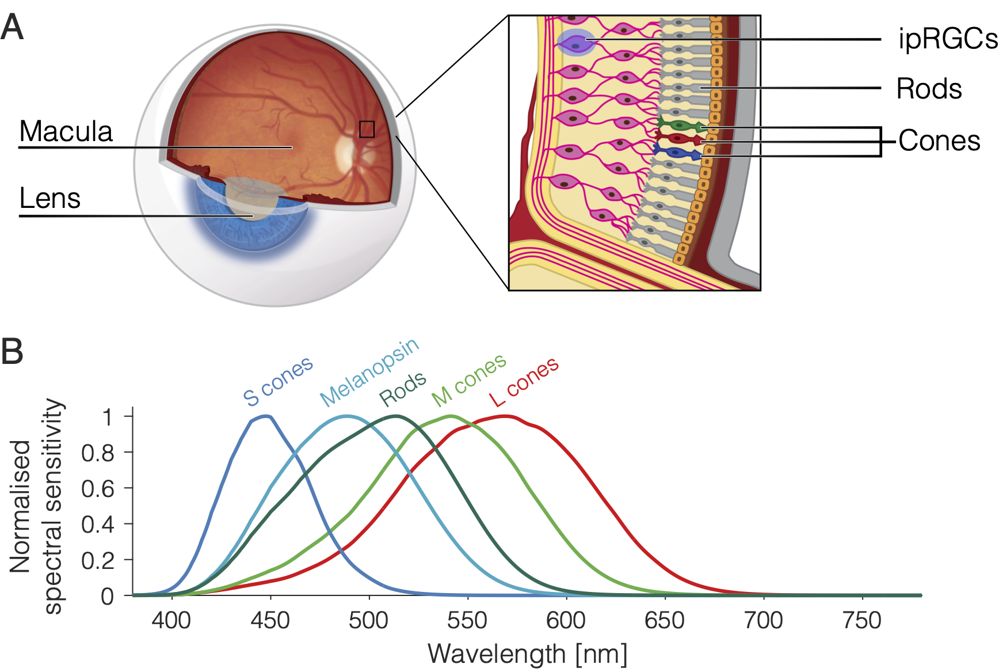

Background¶
“Silent substitution … involves using pairs of lights to selectively stimulate one class of retinal photoreceptor whilst maintaining a constant level of activation in others.”
A normal human retina contains several types of photosensetive cell. Enabling colour vision at mesopic/photopic light levels are the short-, medium-, and long-wavelength-light-sensetive cone photoreceptors. Cone cells are packed densley into the fovea and distributed sparsely outside of this area. For scotopic (twilight) vision we have rod photoreceptors. Though not present at the fovea, rods are the most numerous of the photoreceptor cells and are otherwise widely distributed in the retina. Finally, discovered in human retinae only at the turn of the millenium–intrinsically photosensetive retinal ganglion cells (ipRGCs) expressing the photopigment melanopsin in their axons and soma. ipRGCs do not contribute to vision in the same way as rods and cones but they do play important roles in ‘non-visual’ functions, such as circadian photoentraiment and pupil control, via direct projections to the suprachiasmatic nucleus of the hypothalamus and the olivery pretectal nucleus of the midbrain (Gamlin et al., 2007; Ruby et al., 2002).
As illustrated above, the photoreceptors have different spectral sensetivities. The curve for each type of photoreceptor essentially describes the probability of its capturing a photon at a given wavelength. Therefore S-cones are about 10 times more likely than L-cones to capture photons at 450 nm, and the liklihood of L- and M-cones capturing at 550 nm is about the same. Because the spectral sensetivities of the photoreceptors overlap, it should be clear that most lights in the visible spectrum will stimulate all types of photoreceptor, albeit to varying degrees. But what if we wanted to stimulate only one type of photoreceptor?
Silent substitution is an elegant solution to this problem. The technique involves using pairs of lights to selectively stimulate one class of retinal photoreceptor whilst maintaining a constant level of activation in the others. This is possible owing to Rushton’s (1972) principle of univariance, which states that the output of a photoreceptor is one-dimensional and depends upon quantum catch, not upon what quanta are caught. In other words, different light spectra will have an identical effect on a photoreceptor so long as they lead to the same number of photons being absorbed. The prinicple of univariance and its relevance to silent substitution is covered in greater detail by Estévez and Spekreijse (1982) along with other details regarding the early history of the method. For a more recent review that includes a rundown of various methodological challanges, refer to Spitschan and Woelders (2018).
In vision science, the method of silent substitution has contributed to our understanding of human colour vision mechanisms (e.g., Horiguchi et al., 2013) and it has enabled researchers to examine how targeted photoreceptor stimulation affects physiological responses such as melatonin suppression (e.g., Allen et al., 2018), the electroretinogram (e.g., Maguire et al., 2017) and the pupillary light reflex (e.g., Spitschan et al., 2014). Its potential as a diagnostic tool for retinal disease has also garnered attention in recent years (e.g., Kuze et al., 2017; Wise et al., 2021).
Tables and indices